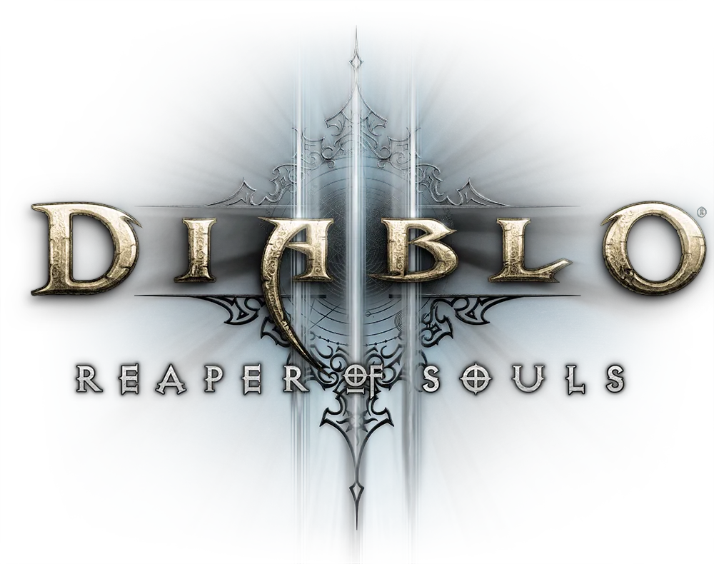

Diablo 3
디아블로 III는 블리자드 엔터테인먼트 에서 개발 및 배급한 디아블로 시리즈 의 세 번째 작품으로,2012년 에 출시된 액션 롤플레잉 게임 입니다 . 마이크로소프트 윈도우 와 OS X 용으로는 2012년 5월에, 플레이스테이션 3 와 Xbox 360 용으로는 2013년 9월에, 플레이스테이션 4 와 Xbox One 용으로 는 2014년 8월에, 닌텐도 스위치용으로는 2018년 11월에 출시되었습니다. 디아블로 II 의 사건으로부터 20년 후를 배경으로 하며, 플레이어는 야만용사, 성전사, 악마 사냥꾼, 수도사, 강령술사, 부두술사, 마법사 등 7가지 직업 중 하나를 선택하여 디아블로를 물리쳐야 합니다.
디아블로 와 디아블로 II 처럼 , 디아블로 III 는 빠른 속도의 실시간 전투와 아이소메트릭 그래픽 엔진을 특징으로 하는 액션 롤플레잉 게임 입니다 . 이 게임은 고전적인 다크 판타지 요소를 활용하며, 플레이어는 지옥의 세력으로부터 성역을 구해야 하는 영웅적인 캐릭터의 역할을 맡게 됩니다. 캐릭터 직업 선택, 경험치 획득 및 레벨업, 더 강력한 장비 획득 등 다양한 롤플레잉 요소가 포함되어 있습니다.
✔ 영혼의 수확자 : 2013년 게임스컴 에서 디아블로 III: 영혼의 수확자(Reaper of Souls)가 게임의 첫 번째 확장팩 으로 발표되었습니다 . 이 확장팩은 타락한 지혜의 천사 말타엘을 주요 악당으로 내세우고 있으며, 중세 고딕 양식의 여러 지역에서 영감을 받은 도시 웨스트마치(Westmarch)를 배경으로 합니다. 확장팩에는 십자군이라는 새로운 영웅, 레벨 상한이 70으로 상향 조정된 점, 마법 부여 시스템을 사용하여 아이템 능력치를 변경할 수 있는 기능, 형상변환을 사용하여 아이템 외형을 변경할 수 있는 기능 등 전리품 드롭이 크게 개선된 점, 그리고 계정 전체에 적용되고 레벨 상한이 없는 개선된 정복자 레벨 시스템이 포함되어 있습니다. [ 89 ] 영혼의 수확자는 2014년 3월 25일 디아블로 III 의 Windows 및 macOS 버전으로 출시되었습니다 .